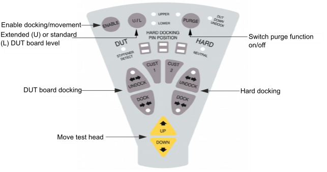
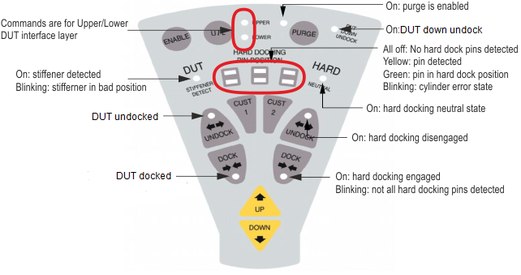
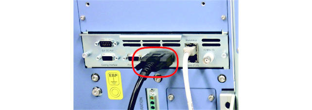

Remote control unit (V93000 EXA Scale system)
The test head is shipped with a remote control unit unto move and dock the test head, as well as to monitor the test head state through LEDs.
Purpose
The remote control unit has the following functions:
- it controls the up/down movement of the test head,
- it operates the hard-docking and DUT board-docking mechanisms.
The remote control unit is held by a magnet to the side of the test head or manipulator.
Buttons
The figure below shows a drawing of the remote control unit with a brief explanation of the buttons.

| Buttons | Functions |
|---|---|
| ENABLE | Enables docking, undocking and manipulator movement though functions are locked by the hardware state. Switches DUT DOWN UNDOCK function on/off by pressing ENABLE together with U/L buttons for >3s. It allows operations that are per default forbidden by the sensor signals (for instance moving the test head while docked). |
| U/L | The docking level Upper is automatically activated in case a Twinning or Wave Scale
Millimeter is connected and DUT docked. Otherwise the default level is Lower. Upper = Card Cage extension (Twinning or Wave Scale Millimeter Solution) Lower = Standard DUT board level Switches DUT DOWN UNDOCK function on/off by pressing ENABLE and U/L buttons for >3s. |
| DUT UNDOCK | Releases DUT board on selected level in combination with the ENABLE button only. In case the test head is turned more than 20° out of the horizontal operational position, DUT DOWN UNDOCK must be enable. DUT UNDOCK is legal in EMO state. If DUT board is already undocked, UNDOCKING is a legal action. |
| DUT DOCK | Docks DUT board on selected level. Press DUT DOCK on the remote control unit. The DUT board/stiffener is locked at this position. This position is called "OPEN‑CONTACT" position, or half-docked position. The LEDs of DOCK and UNDOCK button are lit at this point. Again press DUT DOCK. This is the fully docked position. The pogo pins are in contact with the DUT board/stiffener. The DUT board/stiffener is locked. The LED of the DOCK button is lit at this position. The DUT board must be detected with both STIFFENER DETECT switches (STIFFENER DETECT LED is on) and on-off unit of the test head must not be in EMO state. |
| HARD UNDOCK | Releases hard docking cylinders. HARD undocking is legal if
|
| HARD DOCK | Fixes hard docking cylinders. Hard docking is legal, if
|
| PURGE | Switches purge function on/off. |
| UP | Moves test head up, Hard and DUT docking must be in UNDOCK state and not in EMO state. |
| DOWN | Moves test head down, Hard and DUT docking must be in UNDOCK state and not in EMO state. |
| CUST1/2 | The intended usage is to trigger actions at SmarTest side from remote control unit. |
LEDs
The remote control offers visual information, and the beeper of the control board offers acoustic information, both about safety relevant actions. The figure below shows a drawing of the remote control unit with an explanation of the LEDs.

| LED | Description |
|---|---|
| UPPER/LOWER |
Indicates if DUT docking commands and statuses are for upper or lower DUT interface layer (Solution Extension (Upper) vs. Standard DUT board level (Lower)). Only one LED must be lighted, otherwise other level is in error condition. A blinking LED shows an error state. |
| DUT UNDOCK/DOCK |
|
| HARD UNDOCK/DOCK |
|
| STIFFENER DETECT |
|
| PURGE | LED on indicates that PURGE kit function is enabled. |
| NEUTRAL |
LED on indicates NEUTRAL state of Hard docking. Before you can go for the HARD DOCK or HARD UNDOCK state, the hard docking mechanism must be in the HARD NEUTRAL state. |
| HARD DOCKING PIN POSITION |
For the HARD DOCKING PIN POSITION, there is a set of rectangular LEDS, one orange and one green, for each of the three docking cylinder, that indicates whether a docking pin is detected (orange) or in hard docking position (green). All off
|
For each cylinder: indicating the pin position for this cylinder
|
|
| DUT DOWN UNDOCK |
Indicates that DUT UNDOCK is enabled with test head in angled position (>20°) Function is only settable in angled test head position and it is automatically disabled in case the test head angle is <=20°. To enable the DUT DOWN UNDOCK function, it is only allowed in angled position (>20°), otherwise beeps indicating illegal action The test system automatically leaves this state latest after 15 seconds. |
Installation
To install the remote control unit on the test head, simple plug it in to the system control board, as shown on the image below.

Functional changes
- Introduced in SmarTest 7.6.0 / 8.3.4